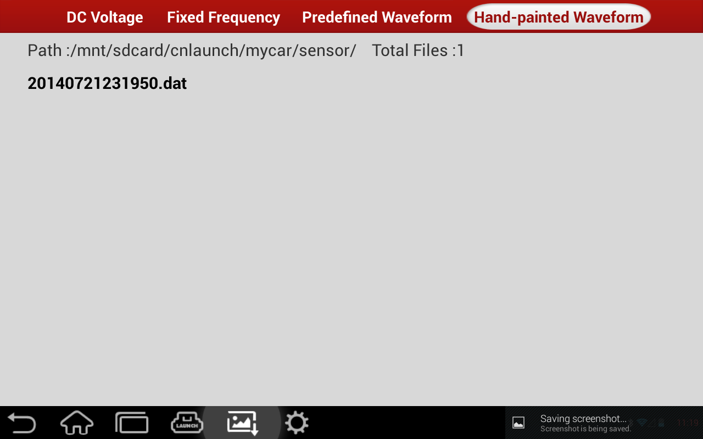

"Hand-drawn Wave Form Analog" function presents great convenience to users when simulate and compare special wave form and faulty wave form. Draw the wave form to be simulated on the grid, set wave form level range (high and low) and period via the parameter setting provided by setting button at the bottom and click "Start", it will output demanded wave form. Users can also save the drawing and selected parameters, and call out formerly set hand-drawn wave form analog. Text at the top of the grid displays high side voltage, low side voltage and period of current wave form. Refer to the imagepicture
Save: Click this button, it will prompt a window to input file name. It can save selected wave form parameters and drawing;
Loading: Click this button, it will prompt a window to choice the file. It can loading the saved file ;
|  |
Function buttons: Click these buttons, users can adjust the period, high level and low level of the hand-drawn wave form in the prompted function widget. Current selected parameters of period, high side voltage and low side voltage are displayed on the grid.
Select Wave Form:：Click this button, in the prompted window of sensor select and wave form select, select sensor type and wave form type to be simulated.
Start (Stop): It starts/stops hand-drawn wave form analog output.
NOTE:
When drawing the wave form, one complete wave form in a period would be ok (when output, system takes the drawing as in one period). The drawing shall be as large as possible in order to get more sampling points. The more sampling points obtained, the smaller the deviation between output wave form and hand-drawn wave form will be. When drawing, it's not necessary to consider high/low level and period, which could be set in the setting parameters.